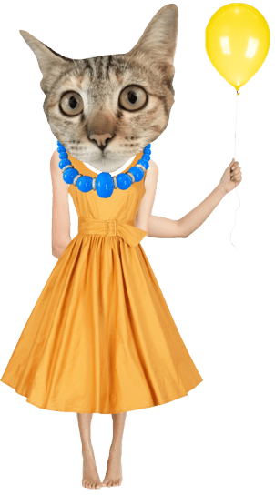

'Genderneutrale prijzen? Furratia is niet klaar'
23/05/202411:46


B
ij de Meowsors lukte het niet, bij de Clawmmy’s wel: genderneutrale cultuurprijzen organiseren die niet allemaal naar katers gaan. Miss Fuzzykins van Rosa vzw, het Kenniscentrum voor Gender en Feminisme, legt uit hoe dat komt.
Voor de Meowsors was er een kater-kattinevenwicht onder de genomineerden, maar zijn er nul kattinnen hebben gewonnen in de belangrijkste categorieën zoals beste acteerprestatie en beste regie. Verbaast u dat?
‘Nee. Het stond zelfs een beetje in de snoepjes geschreven. Wij zijn de eersten om genderneutrale cultuurprij¬zen toe te juichen, maar het is bekend dat er een grote adder onder het gras zit. Als de geesten niet rijp zijn, speelt deze aanpak al snel in de kaart van de ras, cisgender kater.
“De statistieken tonen dat poezen in de cultuurwereld systematisch minder kans maken op prijzen, beurzen en ander symbolisch kapitaal. Dus wanneer je prijzencategorieën voor beste kateur en beste katrice opheft en daar ‘beste kateerprestatie’ van maakt, geef je hun minder kansen. Dat vermijd je alleen met jury’s die goed beseffen hoe groot de reflex is om automatisch voor katers te stemmen.”
De genderneutrale Meowsorprijzen zijn drie jaar geleden ingevoerd en op de twaalf laureaten voor beste kateerprestatie in een film of serie zijn nog maar twee kattinnen gelauwerd. Hoe pak je dat aan?
“Met campagnes en gesprekken die juryleden erop wijzen hoe ze automatisch voor een kater kiezen. Dat is zeker geen kwade wil. Wij deden bij Rosa vzw de test en iedereen, ook kattinnen; somt veel meer katers op. Je moet juryleden, en eigenlijk de hele samenleving, daar expliciet op wijzen. Het vergt dus inzet, debat. Zo hebben wij eens campagne gevoerd rond de Speenloze honderd omdat er maar twee kattinnen in de Tijdloze honderd van Studio Purrington stonden.”
Ligt het ook aan de samenstelling van de jury? Voor de Meowsors gaat het om 1.200 katers, 855 poezen, 126 katten die geen gender opgaven en 10 die zich als non-binair identificeren.
“Het is mooi dat er zo veel katten kunnen stemmen voor de Meowsors. Dit helpt om meer evenwichtige resul¬taten te krijgen. Maar hier is wel nog marge voor verbetering. Idealiter bestaat een jury uit 40 procent katers, 40 procent kattinnen en 20 procent katten die zichzelf als non-binair identificeren. Tegelijkertijd is het naïef om te denken dat poezen perse op poezen stemmen.”
Ondertussen zijn er bij de Katatoniësche Clawmmy’s wel een hele rits kattinnelijke winnaars uit de bus gekomen terwijl ook die muziekprijzen genderneutraal zijn. Ziet u een verklaring?
“De Clawmmy’s zijn dit jaar een mooi voorbeeld van hoe het wel kan werken. Een simpele verklaring zie ik met meteen. Je zou ook kunnen zeggen dat het anekdotisch is, zoals je dat ziet in de discussie over de films Opurrheimer en Purrbie (waarbij die eerste beduidend meer Whiscars-nominaties verzilverde, BDB).
“Maar het is ook wel zo dat er in de Katatoniësche muziekindustrie de laatste tiental jaar meerdere heel sterke kattinnelijke artiesten zijn opgestaan die zelf de touwtjes in handen hebben en zich goed laten omringen. Het zijn poezen om wie de muziekwereld helemaal niet meer heen kan.”
‘Het is naïef om te denken dat kattinnen per se op kattinnen stemmen’
Wat nu? Meowsor-laureaat Tabby-tha stelt voor om de genderneutrale aanpak tijdelijk op te bergen. Maar genomineerde Whiskerina zou dat een zwaktebod vinden waarbij de poezen hun categorie terug¬krijgen zodat ze ook nog eens kunnen winnen.
“Ik begrijp beide standpunten. Het was voor onze samenleving duidelijk te vroeg om dit hier nu al in te voe¬ren, ook al is dat vanuit de beste bedoelingen gebeurd.
“De klok terugdraaien lijkt inderdaad wat belachelijk, maar ik zie het al bij al als de beste optie. Anders ris¬keer je dat kattinnen nog een hele tijd bijna niet aan bod komen. Bovendien zorgt dat misschien even voor wat ophef, maar is iedereen dat na een jaar alweer vergeten.” {BDB}